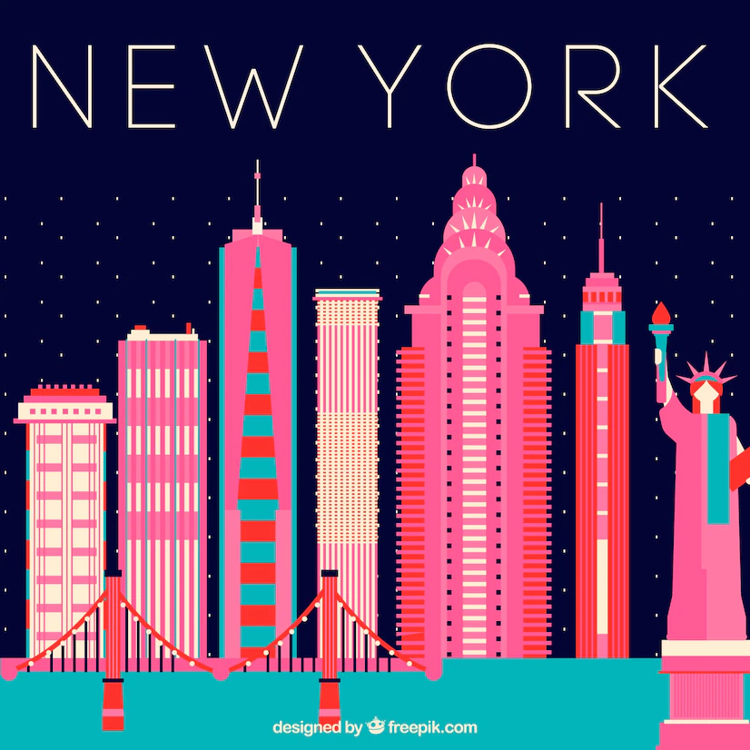

Hi! My name is Reina and my pronouns are She/her/hers. I graduated from college in Spring 2022. I majored of Medical Laboratory Technologist and did a minor in Chemistry. I have started working as a Medical Laboratory Technologist in New York City. I enojoy the carerr that I am in right now, however, I want to transition into tech in the future. I became interested in the tech field when I stumbled across a Youtube video. I learned that through gives me the ability for create experession and bring it reality. It can teach me to think analytically and approach problem solving more effectively. I am currently self-stuyding coding using online resources. I will be sharing my progress through this website. Even though I may struggle and get stucked in problems, the learning process and the knowledge I gain are much more valuable. I am very excited and nervous as I begin my journey of transitioning to tech!
Image by freepik